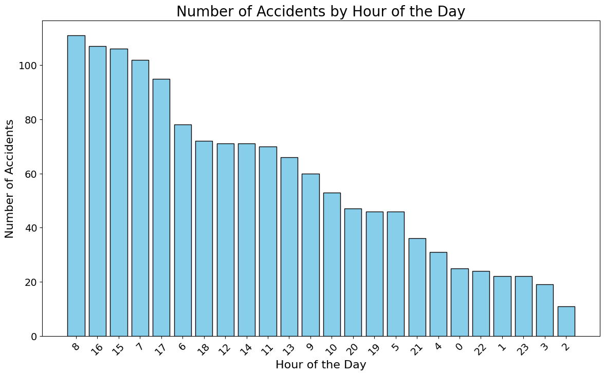
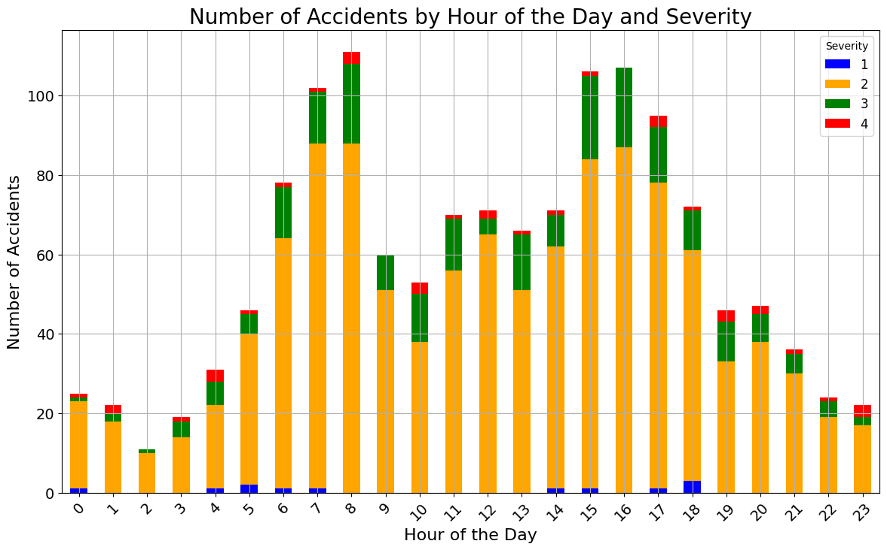
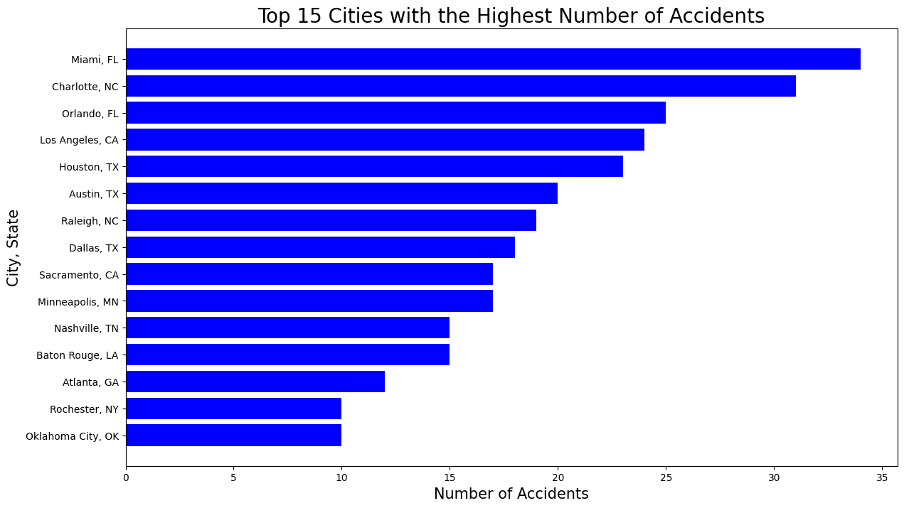

import pandas as pd
import matplotlib.pyplot as plt
traffic_df = pd.read_csv('https://raw.githubusercontent.com/sachigill/dhfinalproject/main/traffic_accident_data.csv')#traffic_df['date'] = pd.to_datetime(accidents['date'])
#traffic_df = traffic_df.dropna()
# Descriptive statistics
#descriptive_stats = traffic_df.describe()
#print(descriptive_stats)
#severity = traffic_df['Severity'].describe()
#temperature = traffic_df['Temperature(F)'].describe()
#precipitation = traffic_df['Precipitation(in)'].describe()
#print("Severity Stats:\n", severity)
#print("Temperature Stats:\n", temperature)
#print("Precipitation Stats:\n", precipitation)
pd.set_option('display.max_columns', None)
print(traffic_df.head())
traffic_df['Wind_Speed(mph)'] = pd.to_numeric(traffic_df['Wind_Speed(mph)'], errors='coerce')
traffic_df['Precipitation(in)'] = pd.to_numeric(traffic_df['Precipitation(in)'], errors='coerce')
traffic_df['Temperature(F)'] = pd.to_numeric(traffic_df['Temperature(F)'], errors='coerce')
traffic_df['Humidity(%)'] = pd.to_numeric(traffic_df['Humidity(%)'], errors='coerce')
traffic_df['Visibility(mi)'] = pd.to_numeric(traffic_df['Visibility(mi)'], errors='coerce')
descriptive_stats = traffic_df[['Severity', 'Wind_Speed(mph)', 'Precipitation(in)', 'Temperature(F)', 'Humidity(%)', 'Visibility(mi)']].describe()
descriptive_stats ID Source Severity Start_Time End_Time \
0 A-2047758 Source2 2 2019-06-12 10:10:56 2019-06-12 10:55:58
1 A-4694324 Source1 2 2022-12-03 23:37:14 2022-12-04 1:56:53
2 A-5006183 Source1 2 2022-08-20 13:13:00 2022-08-20 15:22:45
3 A-4237356 Source1 2 2022-02-21 17:43:04 2022-02-21 19:43:23
4 A-6690583 Source1 2 2020-12-04 1:46:00 2020-12-04 4:13:09
Start_Lat Start_Lng End_Lat End_Lng Distance(mi) \
0 30.641211 -91.153481 NaN NaN 0.000
1 38.990562 -77.399070 38.990037 -77.398282 0.056
2 34.661189 -120.492822 34.661189 -120.492442 0.022
3 43.680592 -92.993317 43.680574 -92.972223 1.054
4 35.395484 -118.985176 35.395476 -118.985995 0.046
Description Street \
0 Accident on LA-19 Baker-Zachary Hwy at Lower Z... Highway 19
1 Incident on FOREST RIDGE DR near PEPPERIDGE PL... Forest Ridge Dr
2 Accident on W Central Ave from Floradale Ave t... Floradale Ave
3 Incident on I-90 EB near REST AREA Drive with ... 14th St NW
4 RP ADV THEY LOCATED SUSP VEH OF 20002 - 726 CR... River Blvd
City County State Zipcode Country Timezone \
0 Zachary East Baton Rouge LA 70791-4610 US US/Central
1 Sterling Loudoun VA 20164-2813 US US/Eastern
2 Lompoc Santa Barbara CA 93436 US US/Pacific
3 Austin Mower MN 55912 US US/Central
4 Bakersfield Kern CA 93305-2649 US US/Pacific
Airport_Code Weather_Timestamp Temperature(F) Wind_Chill(F) \
0 KBTR 2019-06-12 9:53:00 77.0 77.0
1 KIAD 2022-12-03 23:52:00 45.0 43.0
2 KLPC 2022-08-20 12:56:00 68.0 68.0
3 KAUM 2022-02-21 17:35:00 27.0 15.0
4 KBFL 2020-12-04 1:54:00 42.0 42.0
Humidity(%) Pressure(in) Visibility(mi) Wind_Direction Wind_Speed(mph) \
0 62.0 29.92 10.0 NW 5.0
1 48.0 29.91 10.0 W 5.0
2 73.0 29.79 10.0 W 13.0
3 86.0 28.49 10.0 ENE 15.0
4 34.0 29.77 10.0 CALM 0.0
Precipitation(in) Weather_Condition Amenity Bump Crossing Give_Way \
0 0.0 Fair False False False False
1 0.0 Fair False False False False
2 0.0 Fair False False False False
3 0.0 Wintry Mix False False False False
4 0.0 Fair False False False False
Junction No_Exit Railway Roundabout Station Stop Traffic_Calming \
0 False False False False False False False
1 False False False False False False False
2 False False False False False False False
3 False False False False False False False
4 False False False False False False False
Traffic_Signal Turning_Loop Sunrise_Sunset Civil_Twilight \
0 True False Day Day
1 False False Night Night
2 True False Day Day
3 False False Day Day
4 False False Night Night
Nautical_Twilight Astronomical_Twilight
0 Day Day
1 Night Night
2 Day Day
3 Day Day
4 Night Night | Severity | Wind_Speed(mph) | Precipitation(in) | Temperature(F) | Humidity(%) | Visibility(mi) | |
|---|---|---|---|---|---|---|
| count | 1499.000000 | 1391.000000 | 1027.000000 | 1474.000000 | 1471.000000 | 1468.000000 |
| mean | 2.210140 | 7.721783 | 0.007653 | 62.030122 | 65.186268 | 9.134475 |
| std | 0.485302 | 5.341519 | 0.058991 | 18.640740 | 22.755323 | 2.500550 |
| min | 1.000000 | 0.000000 | 0.000000 | -35.000000 | 6.000000 | 0.000000 |
| 25% | 2.000000 | 4.600000 | 0.000000 | 50.000000 | 48.000000 | 10.000000 |
| 50% | 2.000000 | 7.000000 | 0.000000 | 64.000000 | 67.000000 | 10.000000 |
| 75% | 2.000000 | 10.400000 | 0.000000 | 76.000000 | 85.000000 | 10.000000 |
| max | 4.000000 | 32.200000 | 1.360000 | 111.000000 | 100.000000 | 45.000000 |
weather_condition = traffic_df['Weather_Condition'].dropna().unique()
print("Weather Conditions:", weather_condition)
print("Number of Unique Weather Conditions:", len(weather_condition))Weather Conditions: ['Fair' 'Wintry Mix' 'Light Rain' 'Cloudy' 'Mostly Cloudy' 'Partly Cloudy'
'Clear' 'Scattered Clouds' 'Fog' 'Overcast' 'Light Snow' 'T-Storm'
'Thunderstorms and Rain' 'Thunder' 'Light Rain with Thunder' 'Rain'
'Showers in the Vicinity' 'Mostly Cloudy / Windy' 'Heavy Rain'
'Cloudy / Windy' 'Light Drizzle' 'Heavy T-Storm' 'Light Rain / Windy'
'Smoke' 'Haze' 'Blowing Dust / Windy' 'N/A Precipitation'
'Thunder in the Vicinity' 'Snow' 'Heavy Thunderstorms and Rain'
'Shallow Fog' 'Light Freezing Drizzle' 'Fair / Windy' 'Patches of Fog'
'Light Snow / Windy' 'Blowing Snow / Windy' 'Thunderstorm' 'Drizzle'
'T-Storm / Windy' 'Partly Cloudy / Windy']
Number of Unique Weather Conditions: 40plt.figure(figsize=(12, 8))
traffic_df['Weather_Condition'].value_counts().plot(kind='bar')
plt.xlabel('Weather Condition')
plt.ylabel('Number of Accidents')
plt.title('Accidents by Weather Condition')
plt.show()
from wordcloud import WordCloud
import nltk
import re
from nltk.corpus import stopwords
nltk.download('stopwords')
stop_words = set(stopwords.words('english'))
custom_stop_words = {'due', 'accident', 'ca'}
stop_words.update(custom_stop_words)
traffic_df['Description'] = traffic_df['Description'].astype(str)
def text_process(description, stop_words):
description = description.lower()
#description = re.sub(r'\d+', '', description)
#description = re.sub(r'[^\w\s]', '', description)
words = description.split()
# Remove stop words
words_no_stop = [w for w in words if w not in stop_words]
# Join words back into a single string
return ' '.join(words_no_stop)
traffic_df['description_final'] = traffic_df['Description'].apply(lambda x: text_process(x, stop_words))
# Combine all descriptions into a single string
all_descriptions = ' '.join(traffic_df['description_final'])
# Generate the word cloud
wordcloud = WordCloud(width=800, height=400, background_color='white').generate(all_descriptions)
# Display the word cloud
plt.figure(figsize=(10, 5))
plt.imshow(wordcloud, interpolation='bilinear')
plt.axis('off')
plt.title('Word Cloud of Traffic Accident Descriptions')
plt.show()[nltk_data] Downloading package stopwords to /home/jovyan/nltk_data...
[nltk_data] Package stopwords is already up-to-date!
county = 'Los Angeles'
traffic_df_location = traffic_df[traffic_df['County'] == county]
traffic_df['description_final'] = traffic_df['Description'].apply(lambda x: text_process(x, stop_words))
all_descriptions_location = ' '.join(traffic_df_location['description_final'])
wordcloud = WordCloud(width=800, height=400, background_color='white').generate(all_descriptions_location)
plt.figure(figsize=(8, 5))
plt.imshow(wordcloud, interpolation='bilinear')
plt.axis('off')
plt.title(f'Common words in Traffic Accident Descriptions in Los Angeles County')
plt.show()county = 'New York'
traffic_df_location = traffic_df[traffic_df['County'] == county]
traffic_df['description_final'] = traffic_df['Description'].apply(lambda x: text_process(x, stop_words))
all_descriptions_location = ' '.join(traffic_df_location['description_final'])
wordcloud = WordCloud(width=800, height=400, background_color='white').generate(all_descriptions_location)
plt.figure(figsize=(8, 5))
plt.imshow(wordcloud, interpolation='bilinear')
plt.axis('off')
plt.title(f'Common words in Traffic Accident Descriptions in New York County')
plt.show()county = 'San Francisco'
traffic_df_location = traffic_df[traffic_df['County'] == county]
traffic_df['description_final'] = traffic_df['Description'].apply(lambda x: text_process(x, stop_words))
all_descriptions_location = ' '.join(traffic_df_location['description_final'])
wordcloud = WordCloud(width=800, height=400, background_color='white').generate(all_descriptions_location)
plt.figure(figsize=(18, 5))
plt.imshow(wordcloud, interpolation='bilinear')
plt.axis('off')
plt.title(f'Common words in Traffic Accident Descriptions in SF County')
plt.show()traffic_df['Start_Time'] = pd.to_datetime(traffic_df['Start_Time'], errors='coerce')
traffic_df = traffic_df.dropna(subset=['Start_Time'])
traffic_df['Month'] = traffic_df['Start_Time'].dt.month
#grouping by month and count the number of accidents
accident_per_month = traffic_df.groupby('Month').size().reset_index(name='Number_of_Accidents')
# Sort the DataFrame by month for proper order in the plot
accident_per_month = accident_per_month.sort_values('Month')
plt.figure(figsize=(14, 8))
plt.bar(accident_per_month['Month'], accident_per_month['Number_of_Accidents'], color='purple')
plt.xlabel('Month', fontsize=16)
plt.ylabel('Number of Accidents', fontsize=16)
plt.title('Number of Accidents by Month', fontsize=20)
plt.xticks(fontsize=14)
plt.yticks(fontsize=14)
plt.show()accident_per_state = traffic_df.groupby('State').size().reset_index(name='Number_of_Accidents')
accident_per_state = accident_per_state.sort_values('Number_of_Accidents', ascending=False)
plt.figure(figsize=(20, 8))
plt.bar(accident_per_state['State'], accident_per_state['Number_of_Accidents'], color='skyblue')
plt.xlabel('State', fontsize=16)
plt.ylabel('Number of Accidents', fontsize=16)
plt.title('Number of Accidents by State', fontsize=20)
plt.xticks(fontsize=14)
plt.yticks(fontsize=14)
plt.show()plt.figure(figsize=(10, 6))
plt.hist(traffic_df['Severity'], bins=range(1, 6), edgecolor='black', color='blue')
plt.xlabel('Severity', fontsize=14)
plt.ylabel('Frequency', fontsize=14)
plt.title('Distribution of Accident Severity', fontsize=16)
plt.xticks(range(1, 6))
plt.show()
severity_by_state = traffic_df.groupby('State')['Severity'].mean().reset_index()
# Sort by severity for better visualization
severity_by_state = severity_by_state.sort_values(by='Severity', ascending=False)
# Plot the bar chart
plt.figure(figsize=(14, 8))
plt.bar(severity_by_state['State'], severity_by_state['Severity'], color='skyblue', edgecolor='black')
plt.xlabel('State', fontsize=15)
plt.ylabel('Average Severity of Accidents', fontsize=15)
plt.title('Average Severity of Accidents by State', fontsize=20)
plt.xticks(rotation=90, fontsize=12)
plt.yticks(fontsize=12)
plt.show()
avg_severity_by_weather = traffic_df.groupby('Weather_Condition')['Severity'].mean().reset_index()
avg_severity_by_weather = avg_severity_by_weather.sort_values(by='Severity', ascending=False)
# Bar plot for average severity by weather condition
plt.figure(figsize=(41, 20))
plt.bar(avg_severity_by_weather['Weather_Condition'], avg_severity_by_weather['Severity'], color='skyblue')
plt.xlabel('Weather Condition', fontsize = 25)
plt.ylabel('Average Accident Severity')
plt.title('Average Accident Severity by Weather Condition', fontsize=35)
plt.xticks(rotation=50)
plt.show()
traffic_df['Wind_Speed(mph)'] = pd.to_numeric(traffic_df['Wind_Speed(mph)'], errors='coerce')
traffic_df = traffic_df.dropna(subset=['Wind_Speed(mph)'])
# Group by windspeed and count the number of accidents
windspeed_accidents = traffic_df.groupby('Wind_Speed(mph)').size().reset_index(name='Number_of_Accidents')
# Plot the data
plt.figure(figsize=(14, 8))
plt.plot(windspeed_accidents['Wind_Speed(mph)'], windspeed_accidents['Number_of_Accidents'], marker='o', linestyle='-', color='blue')
plt.xlabel('Wind Speed (mph)', fontsize=15)
plt.ylabel('Number of Accidents', fontsize=15)
plt.title('Number of Accidents by Wind Speed', fontsize=20)
plt.grid(True)
plt.show()traffic_df['Severity'] = pd.to_numeric(traffic_df['Severity'], errors='coerce')
traffic_df['Wind_Speed(mph)'] = pd.to_numeric(traffic_df['Wind_Speed(mph)'], errors='coerce')
traffic_df = traffic_df.dropna(subset=['Severity', 'Wind_Speed(mph)'])
#grouping by wind speed and figuring out the avg severity
severity_by_wind_speed = traffic_df.groupby('Wind_Speed(mph)')['Severity'].mean().reset_index()
plt.figure(figsize=(14, 8))
plt.plot(severity_by_wind_speed['Wind_Speed(mph)'], severity_by_wind_speed['Severity'], marker='o', linestyle='-', color='blue')
plt.xlabel('Wind Speed (mph)', fontsize=15)
plt.ylabel('Average Severity of Accidents', fontsize=15)
plt.title('Average Severity of Accidents by Wind Speed', fontsize=20)
plt.grid(True)
plt.show()traffic_df['Precipitation(in)'] = pd.to_numeric(traffic_df['Precipitation(in)'], errors='coerce')
traffic_df = traffic_df.dropna(subset=['Precipitation(in)'])
# Group by windspeed and count the number of accidents
windspeed_accidents = traffic_df.groupby('Precipitation(in)').size().reset_index(name='Number_of_Accidents')
# Plot the data
plt.figure(figsize=(14, 8))
plt.plot(windspeed_accidents['Precipitation(in)'], windspeed_accidents['Number_of_Accidents'], marker='o', linestyle='-', color='purple')
plt.xlabel('Precipitation(in)', fontsize=15)
plt.ylabel('Number of Accidents', fontsize=15)
plt.title('Number of Accidents by Precipitation (in)', fontsize=20)
plt.grid(True)
plt.show()
traffic_df['Start_Time'] = pd.to_datetime(traffic_df['Start_Time'], errors='coerce')
# Drop rows with NaT values in 'Start_Time'
traffic_df = traffic_df.dropna(subset=['Start_Time'])
# Extract the year from the date column
traffic_df['Year'] = traffic_df['Start_Time'].dt.year
# Define the weather conditions you want to plot
weather_conditions = ['Overcast', 'Fair', 'Heavy Rain', 'Cloudy', 'Rain', 'Mostly Cloudy', 'Fog']
# Create a dictionary to store data for each weather condition
weather_data = {}
for condition in weather_conditions:
# Filter the dataset for the current weather condition
condition_df = traffic_df[traffic_df['Weather_Condition'] == condition]
# Group by year and count the number of accidents
condition_per_year = condition_df.groupby('Year').size().reset_index(name='Number_of_Accidents')
# Store the result in the dictionary
weather_data[condition] = condition_per_year
# Create the line graph using matplotlib
plt.figure(figsize=(14, 8))
for condition, data in weather_data.items():
plt.plot(data['Year'], data['Number_of_Accidents'], marker='o', linestyle='-', label=condition)
plt.xlabel('Year', fontsize=16)
plt.ylabel('Number of Accidents', fontsize=16)
plt.title('Number of Accidents per Year for Different Weather Conditions', fontsize=20)
plt.xticks(fontsize=14)
plt.yticks(fontsize=14)
plt.grid(True) # Add grid for better readability
plt.legend(title='Weather Condition', fontsize=12) # Add a legend
plt.show()
stop_words = set(stopwords.words('english'))
# Add custom stopwords
custom_stop_words = {'due', 'accident', 'near', 'at', 'from', 'involved', 'on', 'the', 'and', 'a', 'to','ca', 'fl', 'ny', 'w', 'e', 'n', 'tx'}
stop_words.update(custom_stop_words)
# List of states to analyze
states_to_analyze = ['CA', 'TX', 'FL', 'NY', 'NV', 'AZ'] # Example states: California, Texas, Florida
# Filter the DataFrame to include only these states
filtered_df = traffic_df[traffic_df['State'].isin(states_to_analyze)]
# Define the number of rows and columns for subplots
num_states = len(states_to_analyze)
num_cols = 1
num_rows = num_states
# Create subplots
fig, axs = plt.subplots(num_rows, num_cols, figsize=(10, num_rows * 5))
fig.suptitle('Common Words in Traffic Accident Descriptions by Selected States', fontsize=20)
for i, state in enumerate(states_to_analyze):
state_df = filtered_df[filtered_df['State'] == state]
descriptions = ' '.join(state_df['Description'].dropna()).lower()
words = re.findall(r'\b\w+\b', descriptions) # Extract words only
words = [word for word in words if word not in stop_words] # Remove stopwords
common_words_counts = Counter(words).most_common(10)
common_words = [word for word, count in common_words_counts]
counts = [count for word, count in common_words_counts]
ax = axs[i]
ax.barh(common_words, counts, color='skyblue')
ax.set_title(state)
ax.invert_yaxis()
plt.tight_layout(rect=[0, 0, 1, 0.95])
plt.show()
traffic_df['Month'] = traffic_df['Start_Time'].dt.month
# Group by month and calculate the mean severity
avg_severity_by_month = traffic_df.groupby('Month')['Severity'].mean().reset_index()
# Map month numbers to month names for better readability
month_names = {1: 'January', 2: 'February', 3: 'March', 4: 'April', 5: 'May', 6: 'June',
7: 'July', 8: 'August', 9: 'September', 10: 'October', 11: 'November', 12: 'December'}
avg_severity_by_month['Month'] = avg_severity_by_month['Month'].map(month_names)
# Create the bar plot using matplotlib
plt.figure(figsize=(14, 8))
plt.bar(avg_severity_by_month['Month'], avg_severity_by_month['Severity'], color='skyblue', edgecolor='black')
plt.xlabel('Month', fontsize=16)
plt.ylabel('Average Accident Severity', fontsize=16)
plt.title('Average Accident Severity by Month', fontsize=20)
plt.xticks(rotation=45, fontsize=14)
plt.yticks(fontsize=14)
plt.show()
traffic_df['Start_Time'] = pd.to_datetime(traffic_df['Start_Time'], errors='coerce')
# Drop rows with NaT values in 'Start_Time'
traffic_df = traffic_df.dropna(subset=['Start_Time'])
# Extract the hour from the date column
traffic_df['Hour'] = traffic_df['Start_Time'].dt.hour
# Group by hour and calculate the mean severity
avg_severity_by_hour = traffic_df.groupby('Hour')['Severity'].mean().reset_index()
# Sort the DataFrame by severity in descending order
avg_severity_by_hour = avg_severity_by_hour.sort_values(by='Severity', ascending=False)
# Create the bar plot using matplotlib
plt.figure(figsize=(14, 8))
plt.bar(avg_severity_by_hour['Hour'].astype(str), avg_severity_by_hour['Severity'], color='skyblue', edgecolor='black')
plt.xlabel('Hour of the Day', fontsize=16)
plt.ylabel('Average Accident Severity', fontsize=16)
plt.title('Average Accident Severity by Hour of the Day', fontsize=20)
plt.xticks(rotation=45, fontsize=14) # Set x-ticks from 0 to 23
plt.yticks(fontsize=14)
plt.show()
traffic_df['Start_Time'] = pd.to_datetime(traffic_df['Start_Time'], errors='coerce')
# Drop rows with NaT values in 'Start_Time'
traffic_df = traffic_df.dropna(subset=['Start_Time'])
# Extract the hour from the date column
traffic_df['Hour'] = traffic_df['Start_Time'].dt.hour
# Group by hour and count the number of accidents
accidents_per_hour = traffic_df.groupby('Hour').size().reset_index(name='Number_of_Accidents')
# Sort the DataFrame by number of accidents in descending order
accidents_per_hour = accidents_per_hour.sort_values(by='Number_of_Accidents', ascending=False)
# Create the bar plot using matplotlib
plt.figure(figsize=(14, 8))
plt.bar(accidents_per_hour['Hour'].astype(str), accidents_per_hour['Number_of_Accidents'], color='skyblue', edgecolor='black')
plt.xlabel('Hour of the Day', fontsize=16)
plt.ylabel('Number of Accidents', fontsize=16)
plt.title('Number of Accidents by Hour of the Day', fontsize=20)
plt.xticks(rotation=45, fontsize=14)
plt.yticks(fontsize=14)
plt.show()
traffic_df['Start_Time'] = pd.to_datetime(traffic_df['Start_Time'], errors='coerce')
# Drop rows with NaT values in 'Start_Time'
traffic_df = traffic_df.dropna(subset=['Start_Time'])
# Extract the hour from the date column
traffic_df['Hour'] = traffic_df['Start_Time'].dt.hour
# Group by hour and severity and count the number of accidents
hourly_severity_counts = traffic_df.groupby(['Hour', 'Severity']).size().unstack(fill_value=0)
# Plot the stacked bar chart
hourly_severity_counts.plot(kind='bar', stacked=True, figsize=(14, 8), color=['skyblue', 'orange', 'green', 'red'])
plt.xlabel('Hour of the Day', fontsize=16)
plt.ylabel('Number of Accidents', fontsize=16)
plt.title('Number of Accidents by Hour of the Day and Severity', fontsize=20)
plt.legend(title='Severity', fontsize=12)
plt.xticks(rotation=45, fontsize=14)
plt.yticks(fontsize=14)
plt.grid(True)
plt.show()
plt.figure(figsize=(14, 8))
plt.hist(traffic_df['Sunrise_Sunset'], bins=2, color='blue', edgecolor='black')
plt.xlabel('Time of Day', fontsize=15)
plt.ylabel('Number of Accidents', fontsize=15)
plt.title('Number of Accidents in Day vs Night', fontsize=24)
plt.show()
traffic_df['Start_Time'] = pd.to_datetime(traffic_df['Start_Time'], errors='coerce')
# Drop rows with NaT values in 'Start_Time'
traffic_df = traffic_df.dropna(subset=['Start_Time'])
# Extract the month from the date column
traffic_df['Month'] = traffic_df['Start_Time'].dt.month
# Group by month and severity and count the number of accidents
monthly_severity_counts = traffic_df.groupby(['Month', 'Severity']).size().unstack(fill_value=0)
# Map month numbers to month names for better readability
month_names = {1: 'January', 2: 'February', 3: 'March', 4: 'April', 5: 'May', 6: 'June',
7: 'July', 8: 'August', 9: 'September', 10: 'October', 11: 'November', 12: 'December'}
monthly_severity_counts.index = monthly_severity_counts.index.map(month_names)
# Plot the stacked bar chart
monthly_severity_counts.plot(kind='bar', stacked=True, figsize=(14, 8), color=['skyblue', 'orange', 'green', 'red'])
plt.xlabel('Month', fontsize=16)
plt.ylabel('Number of Accidents', fontsize=16)
plt.title('Number of Accidents by Month and Severity', fontsize=20)
plt.legend(title='Severity', fontsize=12)
plt.xticks(rotation=45, fontsize=14)
plt.yticks(fontsize=14)
plt.grid(True)
plt.show()
traffic_df['Start_Time'] = pd.to_datetime(traffic_df['Start_Time'], errors='coerce')
# Drop rows with NaT values in 'Start_Time'
traffic_df = traffic_df.dropna(subset=['Start_Time'])
# Group by city and state and count the number of accidents
city_state_accidents = traffic_df.groupby(['City', 'State']).size().reset_index(name='Number_of_Accidents')
# Group by city and state and calculate the mean severity
city_state_severity = traffic_df.groupby(['City', 'State'])['Severity'].mean().reset_index(name='Average_Severity')
# Find the city and state with the highest number of accidents
top_city_state_accidents = city_state_accidents.sort_values(by='Number_of_Accidents', ascending=False).head(10)
# Find the city and state with the highest severity of accidents
top_city_state_severity = city_state_severity.sort_values(by='Average_Severity', ascending=False).head(10)
# Plot the city and state with the highest number of accidents
plt.figure(figsize=(14, 8))
plt.barh(top_city_state_accidents.apply(lambda x: f"{x['City']}, {x['State']}", axis=1),
top_city_state_accidents['Number_of_Accidents'], color='skyblue')
plt.xlabel('Number of Accidents', fontsize=15)
plt.ylabel('City, State', fontsize=15)
plt.title('Top 10 Cities with the Highest Number of Accidents', fontsize=20)
plt.gca().invert_yaxis()
plt.show()
# Plot the city and state with the highest severity of accidents
plt.figure(figsize=(14, 8))
plt.barh(top_city_state_severity.apply(lambda x: f"{x['City']}, {x['State']}", axis=1),
top_city_state_severity['Average_Severity'], color='red')
plt.xlabel('Average Severity of Accidents', fontsize=15)
plt.ylabel('City, State', fontsize=15)
plt.title('Top 10 US Cities with the Highest Severity of Accidents', fontsize=20)
plt.gca().invert_yaxis()
plt.show()

traffic_df['Start_Time'] = pd.to_datetime(traffic_df['Start_Time'])
# Extract year, month, and day from the 'date' column
traffic_df['year'] = traffic_df['Start_Time'].dt.year
traffic_df['month'] = traffic_df['Start_Time'].dt.month
traffic_df['day'] = traffic_df['Start_Time'].dt.day
# Group by year and month and count the number of accidents
accidents_per_month = traffic_df.groupby(['year', 'month']).size().reset_index(name='number_of_accidents')
# Create a datetime column for plotting
accidents_per_month['Start_Time'] = pd.to_datetime(accidents_per_month[['year', 'month']].assign(day=1))
# Plot the number of accidents over time
plt.figure(figsize=(14, 8))
plt.plot(accidents_per_month['Start_Time'], accidents_per_month['number_of_accidents'], marker='o')
plt.xlabel('Date')
plt.ylabel('Number of Accidents')
plt.title('Number of Accidents Over Time')
plt.xticks(rotation=45)
plt.grid(True)
plt.show()
traffic_df['Start_Time'] = pd.to_datetime(traffic_df['Start_Time'], errors='coerce')
# Drop rows with NaT values in 'Start_Time'
traffic_df = traffic_df.dropna(subset=['Start_Time'])
# Define the periods
traffic_df['Time Period'] = ['Pre-COVID' if date < pd.Timestamp('2020-03-01') else 'Post-COVID' for date in traffic_df['Start_Time']]
# Extract year-month for trend analysis
traffic_df['YearMonth'] = traffic_df['Start_Time'].dt.to_period('M')
# Calculate mean severity for each month
monthly_severity = traffic_df.groupby(['YearMonth', 'Time Period'])['Severity'].mean().unstack('Time Period')
# Create line plot for monthly trend
plt.figure(figsize=(14, 8))
monthly_severity.plot(kind='line', marker='o', ax=plt.gca())
plt.xlabel('Date', fontsize=16)
plt.ylabel('Mean Accident Severity', fontsize=16)
plt.title('Monthly Trend of Accident Severity Before and After COVID-19', fontsize=20)
plt.legend(title='Period')
plt.grid(True)
plt.show()